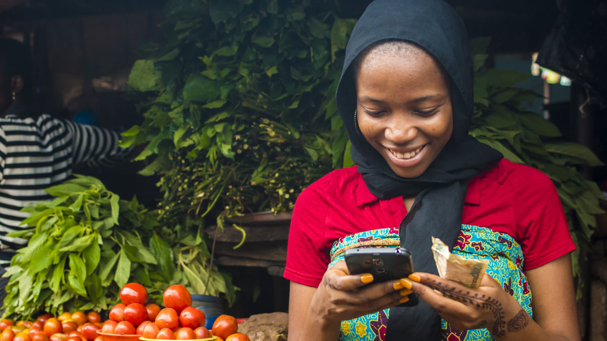
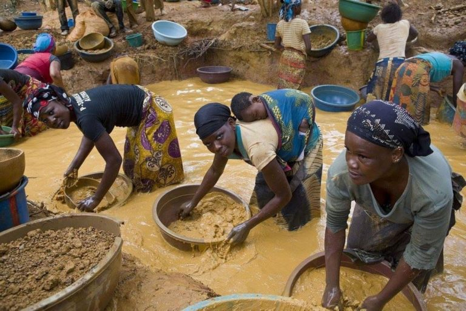
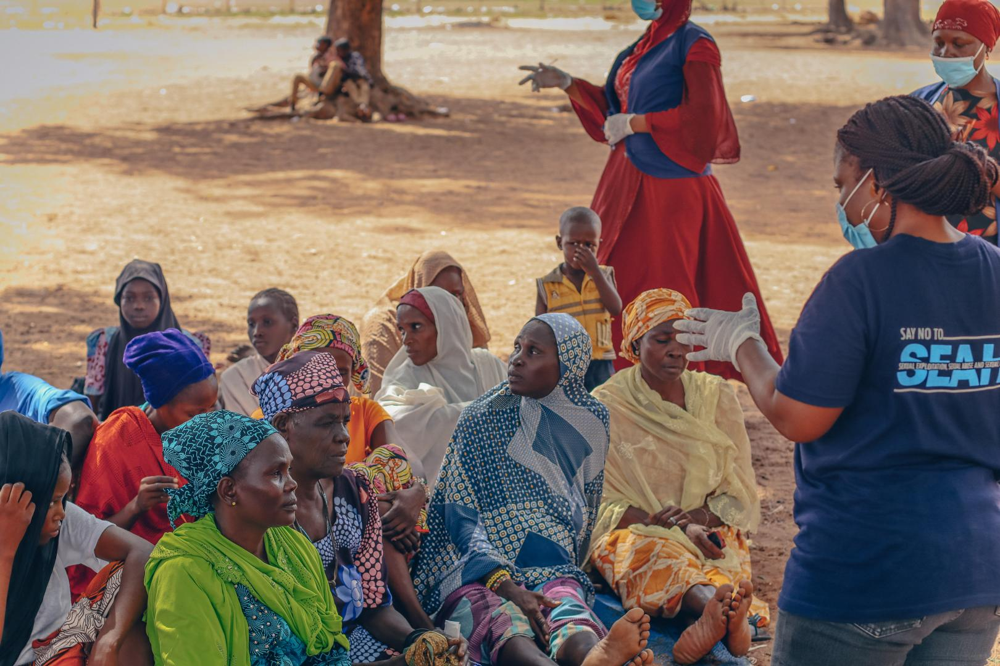

Blog

Investigating Gender and Financial Exclusion in Kenya
In this article, I explore the financial exclusion faced by women in Kenya’s informal sector and how gender-sensitive policies can drive financial inclusion.
Read More

The Impact of Women in Gold Mining: A Story of Exploitation
Through investigative journalism, I uncover the challenges women face in the gold mining sector and how exploitation continues to hinder their growth.
Read More

Visualizing Gender-Based Violence Through Digital Storytelling
Using multimedia storytelling techniques, I bring attention to the pervasive issue of gender-based violence in Kenya, sharing real-life stories that demand action.
Read More
The Role of Social Media in Shaping Gender Narratives
Social media plays a pivotal role in shaping public perceptions of gender roles. In this blog, I discuss how influencers can challenge traditional norms and advocate for equality.
Read More